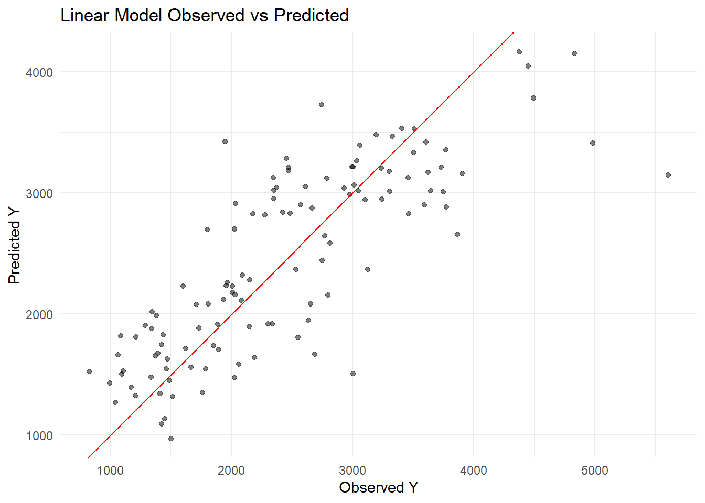
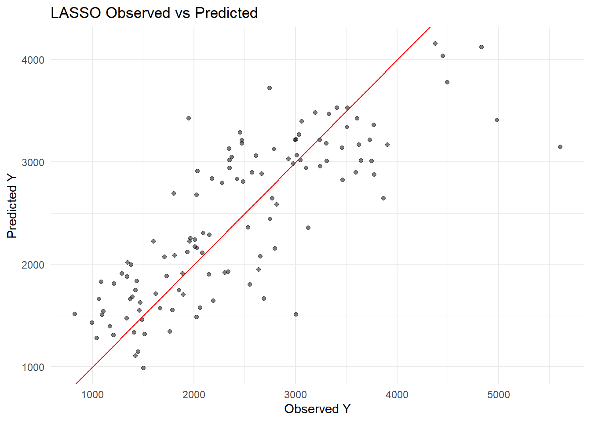
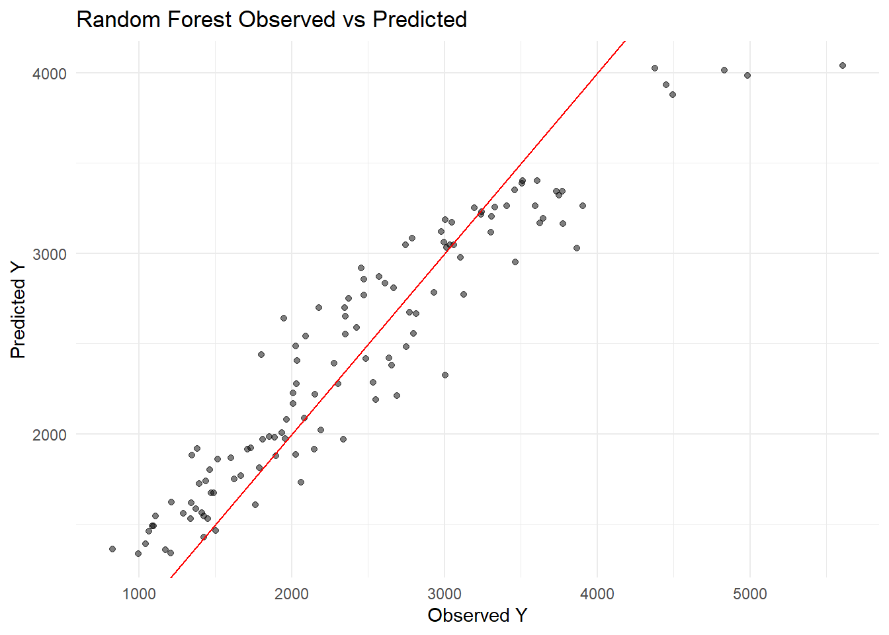
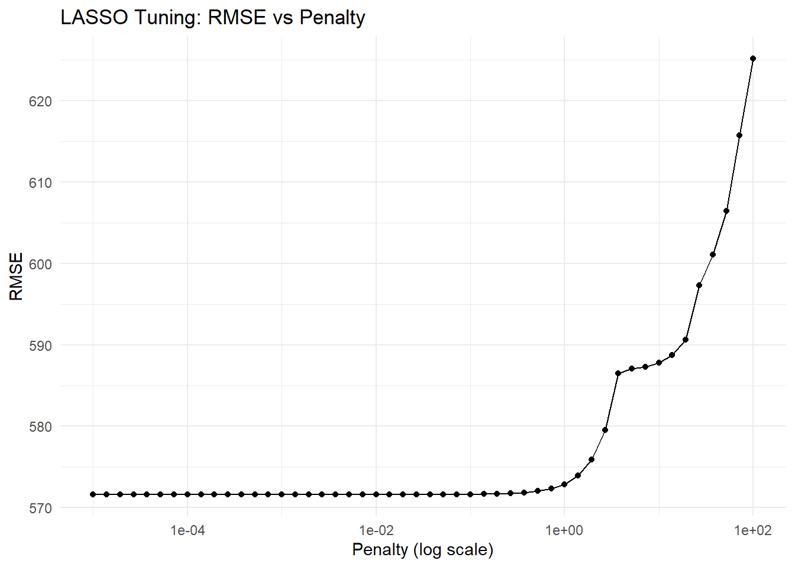
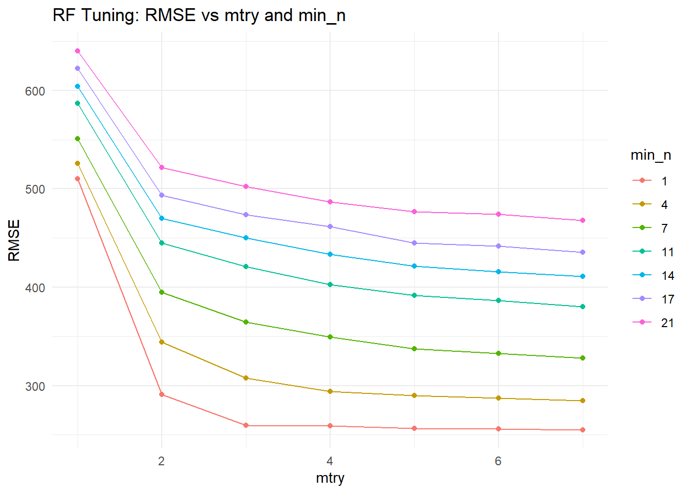

Warning: package 'GGally' was built under R version 4.4.3
library(dplyr)library(glmnet)
Warning: package 'glmnet' was built under R version 4.4.3
Loading required package: Matrix
Warning: package 'Matrix' was built under R version 4.4.3
Attaching package: 'Matrix'
The following objects are masked from 'package:tidyr':
expand, pack, unpack
Loaded glmnet 4.1-10
library(ranger)
Warning: package 'ranger' was built under R version 4.4.3
set.seed(1234)
mavo_clean <-readRDS("mavo_clean.rds")
More processing
# Ensure 3 is included as a factor levelmavo_clean$RACE <-factor(mavo_clean$RACE,levels =c(1,2,3,7,88))levels(mavo_clean$RACE)[levels(mavo_clean$RACE) %in%c("7","88")] <-"3"mavo_clean$RACE <-droplevels(mavo_clean$RACE)table(mavo_clean$RACE)
lm_preds <-predict(lm_fit, mavo_clean) %>%bind_cols(mavo_clean)lasso_preds <-predict(lasso_fit, mavo_clean) %>%bind_cols(mavo_clean)rf_preds <-predict(rf_fit, mavo_clean) %>%bind_cols(mavo_clean)# RMSElm_rmse <-rmse(lm_preds, truth = Y, estimate = .pred)lasso_rmse <-rmse(lasso_preds, truth = Y, estimate = .pred)rf_rmse <-rmse(rf_preds, truth = Y, estimate = .pred)lm_rmse
# A tibble: 1 × 3
.metric .estimator .estimate
<chr> <chr> <dbl>
1 rmse standard 572.
lasso_rmse
# A tibble: 1 × 3
.metric .estimator .estimate
<chr> <chr> <dbl>
1 rmse standard 572.
rf_rmse
# A tibble: 1 × 3
.metric .estimator .estimate
<chr> <chr> <dbl>
1 rmse standard 362.
Observed vs predicted
plot_obs_pred <-function(df, model_name) {ggplot(df, aes(x = Y, y = .pred)) +geom_point(alpha =0.5) +geom_abline(slope =1, intercept =0, color ="red") +labs(title =paste(model_name, "Observed vs Predicted"),x ="Observed Y", y ="Predicted Y") +theme_minimal()}plot_obs_pred(lm_preds, "Linear Model")

plot_obs_pred(lasso_preds, "LASSO")

plot_obs_pred(rf_preds, "Random Forest")

Why are the linear model and the LASSO model so similar? The linear model and LASSO give similar RMSE because the LASSO penalty is small (0.1) so it’s not shrinking coefficients much.
Tuning Models
LASSO grid
AI tools were used to help write the code for this section. I could not get the autoplot function to be compatible.
lasso_spec_tune <-linear_reg(penalty =tune(), mixture =1) %>%set_engine("glmnet")lasso_grid <-tibble(penalty =10^seq(-5, 2, length.out =50))lasso_wf_tune <-create_wf(lasso_spec_tune)# Use apparent() to create a resample object from the full datalasso_resample <-apparent(mavo_clean)# Tune LASSOlasso_tune_res <-tune_grid( lasso_wf_tune,resamples = lasso_resample,grid = lasso_grid)lasso_tune_res %>%collect_metrics(summarize =FALSE) %>%filter(.metric =="rmse") %>%ggplot(aes(x = penalty, y = .estimate)) +geom_line() +geom_point() +scale_x_log10() +labs(title ="LASSO Tuning: RMSE vs Penalty",x ="Penalty (log scale)",y ="RMSE" ) +theme_minimal()

Explain why you see this behavior. What are you doing here, what happens as the penalty parameter goes up? Why does the RMSE only increase and does not go lower than the value found from the linear model or the un-tuned model above?
When tuning the LASSO model, we see that the RMSE is lowest for very small penalty values and increases as the penalty parameter grows. This happens because a low penalty means the LASSO coefficients are barely shrunk, so the model behaves almost exactly like an ordinary linear regression and fits the data as well as the linear model. As the penalty increases, the LASSO starts shrinking coefficients toward zero, simplifying the model and causing it to underfit the data. As a result, the RMSE rises. The RMSE never drops below the value of the linear model because the linear regression already provides the best possible fit to the data in terms of minimizing squared error. LASSO can only reduce the magnitude of coefficients, which can help with generalization on new data but does not improve the fit on the training data itself.
Random Forest
# Define RF tuning spec (fix trees = 300, tune mtry and min_n)rf_spec_tune <-rand_forest(trees =300,mtry =tune(),min_n =tune()) %>%set_engine("ranger", seed =1234) %>%set_mode("regression")# Define tuning grid: mtry 1-7, min_n 1-21, 7 levels eachrf_grid <-grid_regular(mtry(range =c(1, 7)),min_n(range =c(1, 21)),levels =7)# Create workflowrf_wf_tune <-create_wf(rf_spec_tune)# Use apparent() as resamplesrf_resample <-apparent(mavo_clean)# Tune RFrf_tune_res <-tune_grid( rf_wf_tune,resamples = rf_resample,grid = rf_grid)rf_tune_res %>%collect_metrics(summarize =FALSE) %>%filter(.metric =="rmse") %>%ggplot(aes(x = mtry, y = .estimate, color =factor(min_n), group =factor(min_n))) +geom_line() +geom_point() +labs(title ="RF Tuning: RMSE vs mtry and min_n",x ="mtry",y ="RMSE",color ="min_n" ) +theme_minimal()

Tuning with
set.seed(1234)cv_folds <-vfold_cv(mavo_clean, v =5, repeats =5)
Compare what you see for the RMSE here with the results above when we didn’t use CV to evaluate our model. You should find that the LASSO still does best for a small penalty, the RMSE for both models went up, and the LASSO now has lower RMSE compared to the RF. Explain why you are seeing what you do.
RMSE went up for both models. When we used apparent(), we evaluated on the same data we trained on, which artificially deflates RMSE. CV holds out data the model never trained on, giving an honest estimate of out-of-sample performance. Higher RMSE with CV is more expected.
LASSO still does best at low penalty.Higher penalties shrink coefficients too much,which hurts predictive performance. But now the RMSE curve is noisier because it reflects genuine generalization error rather than training error.
LASSO has a lower RMSE than RF. With apparent(), the RF could overfit the training data perfectly, giving artificially low RMSE. With CV, overfitting is penalized. The RF’s complexity doesn’t help and may hurt on unseen folds. The LASSO’s simplicity generalizes better on this dataset.
The LASSO with a small penalty performs best based on CV RMSE. Since a very small LASSO penalty produces essentially the same result as the linear model, the linear model and best LASSO are effectively equivalent.